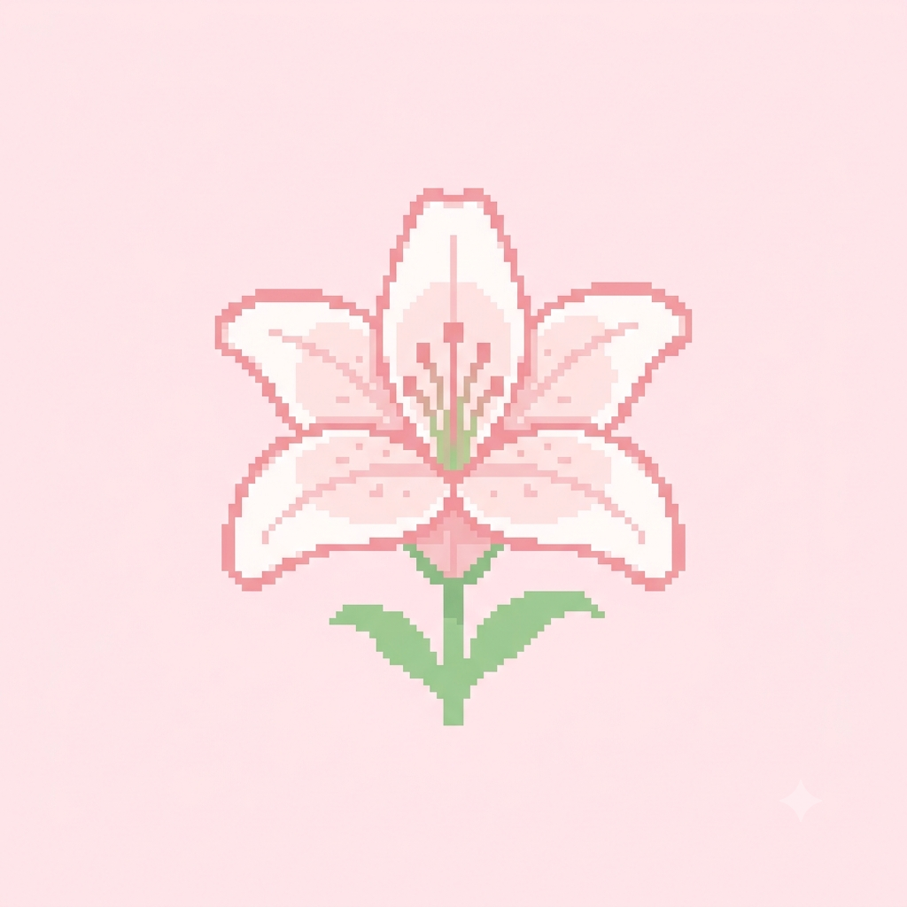
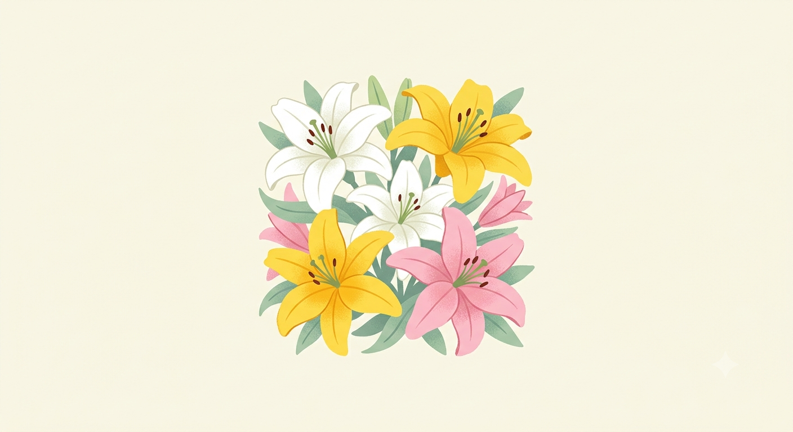
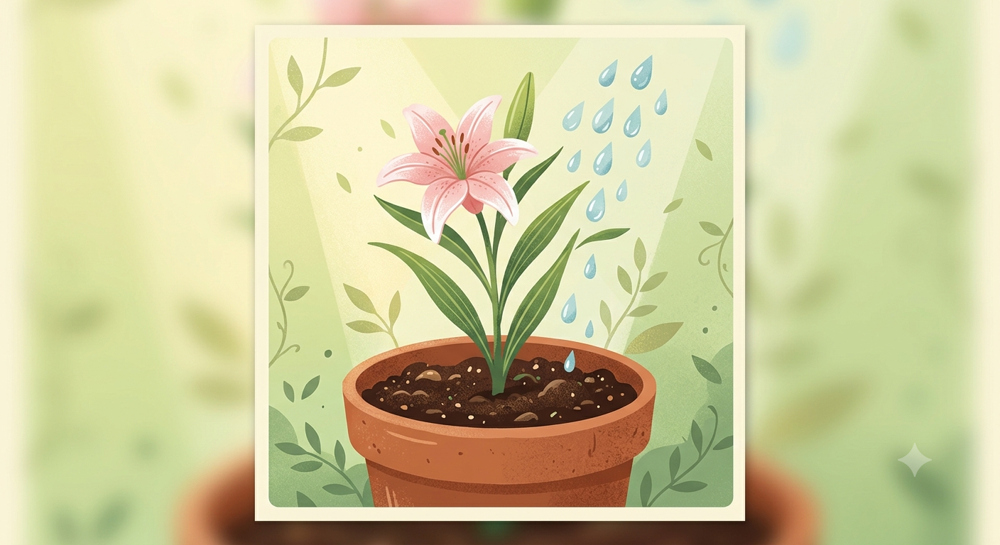
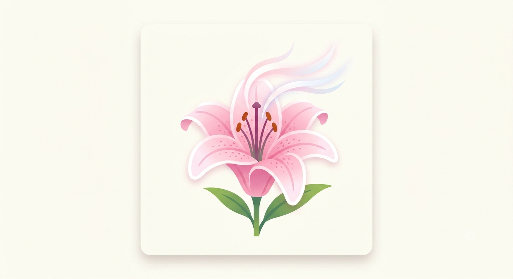
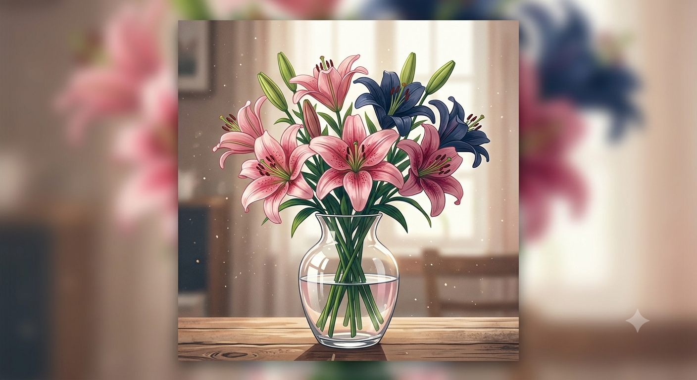

A Elegância dos Lírios
Por: Vitória de Oliveira
Boas-vindas ao meu blog! Os lírios são flores milenares que simbolizam a pureza, a renovação e a sofisticação. Aqui você vai aprender tudo sobre essa planta fascinante.
Compartilhando a beleza, significados e cuidados com os lírios

Por: Vitória de Oliveira
Boas-vindas ao meu blog! Os lírios são flores milenares que simbolizam a pureza, a renovação e a sofisticação. Aqui você vai aprender tudo sobre essa planta fascinante.

Por: Vitória de Oliveira
Cada cor de lírio possui uma mensagem única: os brancos transmitem paz e pureza, os amarelos representam gratidão e alegria, e os lírios cor-de-rosa simbolizam o amor e a admiração sincera.
Fonte: Guia de Jardinagem

Por: Vitória de Oliveira
Para manter seus lírios sempre bonitos, garanta um solo bem drenado e luz solar indireta. Eles adoram a luz do sol da manhã, mas a exposição direta no calor do meio-dia pode queimar suas pétalas delicadas.
Fonte: Revista Botânica

Por: Vitória de Oliveira
A fragrância intensa e adocicada de variedades como o lírio-oriental serve para atrair polinizadores a grandes distâncias. É um dos aromas mais marcantes e apreciados no mundo da perfumaria.
Fonte: Portal das Flores

Por: Vitória de Oliveira
Na Grécia Antiga, acreditava-se que o lírio nasceu das gotas do leite da deusa Hera. Já no Egito, a flor era associada à fertilidade e ao renascimento espiritual.
Fonte: História & Botânica

Por: Vitória de Oliveira
Para fazer os lírios durarem mais em um vaso, remova as anteras (as pontas do miolo que soltam pólen) assim que a flor abrir. Isso evita que as pétalas se manchem e prolonga a vida útil da flor!
Fonte: Arte Floral